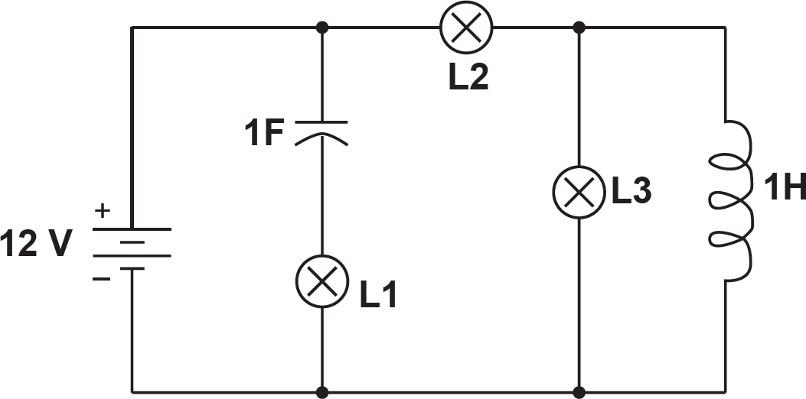

Denominam-se cargas os elementos de um circuito elétrico que se opõem à passagem de corrente elétrica. Essencialmente, distinguem-se três tipos de cargas: resistivas, capacitivas e indutivas. As cargas resistivas dissipam energia, enquanto as puramente capacitivas ou puramente indutivas são consideradas armazenadoras de energia.
Se o circuito mostrado acima é alimentado por uma fonte de tensão contínua de 12 V e as lâmpadas são de 12 V/6 W, observa-se que, em regime permanente,